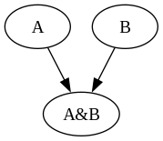
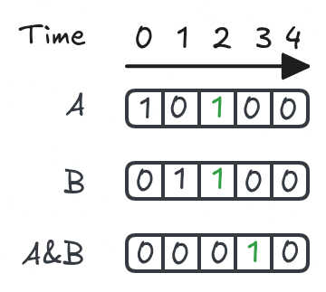

First App
Getting Started
Hopefully you’ve read the README, but I’ll repeat the highlights here. We can make the entire project, including dependencies by simply running make. Additionally, you can override the compiler and any flags you wish to pass through to it.
make
The make rule riscv_vector should only be provided when building for a platform that supports the RISCV Vector Extension version 1.0.
make riscv_vector CXX='riscv64-linux-gnu-g++' CFLAGS='-march=rv64gcv -Ofast -static'
Building a Network
We have two options for building networks, either by hand or through network_tool.
By Hand
This is my preferred option for building small networks as you can get hands on with every bit of the network json.
This file can be found under networks/vrisp_1.json
{
"Properties": {
"node_properties": [
{
"name": "Threshold",
"type": 73,
"index": 0,
"size": 1,
"min_value": 1,
"max_value": 7
}
],
"edge_properties": [
{
"name": "Delay",
"type": 73,
"index": 1,
"size": 1,
"min_value": 7,
"max_value": 1
},
{
"name": "Weight",
"type": 73,
"index": 0,
"size": 1,
"min_value": -7,
"max_value": 7
}
],
"network_properties": []
},
"Nodes": [],
"Edges": [],
"Inputs": [],
"Outputs": [],
"Network_Values": [],
"Associated_Data": {
"other": { "proc_name": "vrisp" },
"proc_params": {
"leak_mode": "all",
"tracked_timesteps": 8,
"max_delay": 7,
"max_threshold": 7,
"max_weight": 7,
"min_potential": 0,
"min_threshold": 1,
"min_weight": -7,
"spike_value_factor": 1.0
}
}
}
Here is an empty VRISP network, in this case names vrisp_7.json, which indicates that weights may range from -7 to 7, and the max threshold of a neuron is also 7. This is a simple setup with small values for easy exploration. This class of network is helpful for modeling binary tasks like common logic gates.
If we were to try and load this network as it sit we won’t accomplish much. Instead, we need to add neurons and synapses to form our network, which is just like a typical graph data structure.
Neuron Object
Each neuron has 3 fields, an id, a name, and its values (configuration properties). IDs must be integers, and names can be any string. Values come from the small section at the top of our network json Properties::node_properties, which described the configurable properties of each neuron. In this case we can set the threshold of a neuron from 1 to 7.
{
"Properties": {
"node_properties": [
{
"name": "Threshold",
"type": 73,
"index": 0,
"size": 1,
"min_value": 1,
"max_value": 7
}
],
// ...
"Nodes": [
{"id": 0, "name": "A", "values": [1]}
],
// ...
Synapse Object
Similarly, a synapse has 3 fields, from, to, and values. From and to reference the id fields of the neurons to be connected, and once again values are the configurable properties for a synapse. In this example we can configure delay and weight.
The order of elements values matches their order in the edge_properties array.
{
"Properties": {
// ...
"edge_properties": [
{
"name": "Delay",
"type": 73,
"index": 1,
"size": 1,
"min_value": 1,
"max_value": 7
},
{
"name": "Weight",
"type": 73,
"index": 0,
"size": 1,
"min_value": -7,
"max_value": 7
}
],
// ...
"Edges": [
{"from": 0, "to": 1, "values": [1, 1]}
],
// ...
Inputs/Outputs
The inputs and outputs array simply specify the id of each input/output neuron. Do note that the order matters here when it comes to interacting with the processor, which we will see in more detail once we get to the C++ side of things.
Creating a Graph
Lets build our first network! We’ll keep things simple by building an AND gate, which has 2 input neurons and 1 output neuron.
We’ll take the original empty network and make the following changes.
// ... "Nodes": [ {"id": 0, "name": "A", "values": [1]}, {"id": 1, "name": "B", "values": [1]}, {"id": 2, "name": "A&B", "values": [2]} ], "Edges": [ {"from": 0, "to": 2, "values": [1, 1]}, {"from": 1, "to": 2, "values": [1, 1]} ], "Inputs": [0, 1], "Outputs": [2], // ...

Here is the bash one-liner I used to generate the graph visualization. It requires having jq installed.
jq '.Nodes as $Nodes | [[.Edges[].from],[.Edges[].to], [.Edges[].values[1]]] | transpose | map (.[0] as $zero | .[1] as $one | .[2] as $weight | [($Nodes[] | select(.id == $zero)).name, ($Nodes[] | select(.id == $one)).name, $weight]) | map ( "\(. [0]),\(. [1]) | (color=\(. [2] | if . >= 0 then "black" else "red" end));")' networks/and_vrisp.json | sed -E -e 's/\[/digraph G \{/' -e 's/\]/}/' -e 's/,/" -> "/' -e 's/ \|/"/' -e 's/,//' -e 's/"$//' -e 's/\(/\[/' -e 's/\)/\]/'
digraph G {
"A" -> "A&B" [color=black];
"B" -> "A&B" [color=black];
}
Now we have our final network. The explanation was long winded, but hopefully you now know just about everything there is to know about creating a network from scratch.
Using Network Tool
The easier way to create these networks is to use network_tool from the framework. The actual process is much less involved, but it does require some initial setup that I’ve taken care of for you here. In order to use network_tool you will need an empty network, which can be generated via the processor_tool. A few empty networks are provided in the vrisp/networks directory.
Here we walk through of creating the same network from above using network tool commands.
$ framework-open/bin/network_tool '>' > FJ networks/vrisp_7.json > AN 0 1 2 > AI 0 1 > AO 2 > SETNAME 0 A > SETNAME 1 B > SETNAME 2 A&B > AE 0 2 > AE 1 2 > SNP_ALL Threshold 1 > SNP 2 Threshold 2 > SEP_ALL Weight 1 > SEP_ALL Delay 1 > TJ tutorial/networks/tutorial_and.json > Q
If we now look in tutorial/networks/tutorial_and.json we should see the following (omitting what we’ve already gone over)…
// ... "Nodes": [ { "id": 0, "name": "A", "values": [1.0] }, { "id": 2, "name": "A&B", "values": [2.0] }, { "id": 1, "name": "B", "values": [1.0] } ], "Edges": [ { "from": 1, "to": 2, "values": [1.0, 1.0] }, { "from": 0, "to": 2, "values": [1.0, 1.0] } ], "Inputs": [0, 1], "Outputs": [2], // ...
Now you know both ways we can create the network json files we will be working with.
Testing the Network
We have a network, but no real way to interact with it yet. Let’s take a quick moment to discuss the processor_tool.
In order to run the network we need to load it onto a processor. In our case this will be processor_tool_vrisp. The processor is bundled directly into the tool so that the overhead of the framework is kept as minimal as possible.
We can use the processor tool to apply spikes to our network, and see which of the output neurons spikes as a result. Here is the help info for the command we will use.
$ (echo "?") | framework-open/bin/processor_tool_vrisp | grep -E "(AS |ML |RUN |OC |OLF )" ML network_json - Make a new processor from the network & load the network. AS node_id spike_time spike_val ... - Apply normalized spikes to the network (note: node_id, not input_id) RUN simulation_time - Run the network for "simulation_time" cycles OC [node_id] [...] - Output the spike count for the given output or all outputs OLF [node_id] [...] - Output the last fire time for the given output or all outputs
> ML tutorial/networks/tutorial_and.json > AS 0 0 1 > AS 1 1 1 > AS 0 2 1 > AS 1 2 1 > RUN 4 > OC node 2(A&B) spike counts: 1 > OLF node 2(A&B) last fire time: 3.0

Great! We can see that when either neuron spikes alone (time steps 0 or 1) that the output neuron does not fire. Once both input neurons spike (time step 2) the output neuron spikes a time step later (time step 3).
Another aspect of network design we have neglected to talk about thus far is leak. The concept is simple in VRISP, when a neuron doesn't fire it either leaks away all of its charge each timestep, or it carrys its charge over to the next timestep. These modes are called "all" and "none" respectively. For the network shown here we are choosing to leak away all charge at every time step.
Building our App
Now we can start building the standalone app that will run our network. To keep things simple, we will write everything in a single C++ source file so that you can see and understand the entire program. The entire file can be found here.
Includes
#include "framework.hpp" #include <fstream> using namespace std; using namespace neuro; using nlohmann::json;
Other than the framework header file itself we only need to include fstream so that we can read in our network json from a file.
Load Network
Due to the framework being a general purpose piece of software it has many different ways to accomplish what you intend to do. To keep things simple we are going copy the code for loading a network out of the processor_tool code.
Network *load_network(Processor **pp, const json &network_json) { Network *net; json proc_params; string proc_name; Processor *p; net = new Network(); net->from_json(network_json); p = *pp; if (p == nullptr) { proc_params = net->get_data("proc_params"); proc_name = net->get_data("other")["proc_name"]; p = Processor::make(proc_name, proc_params); *pp = p; } if (p->get_network_properties().as_json() != net->get_properties().as_json()) { fprintf( stderr, "%s: load_network: Network and processor properties do not match.\n", __FILE__); return nullptr; } if (!p->load_network(net)) { fprintf(stderr, "%s: load_network: Failed to load network.\n", __FILE__); return nullptr; } return net; }
The network json has already been read in, so we can treat it like a map and access the keys we are interested in. We first extract the processor parameters so that we can construct a new processor. Then we check the network parameters and ensure that it is compatible with the processor. Lastly, we tell the processor to load the network so that it is ready to run.
Main
For the purposes of this tutorial we will keep the user interface simple. Our app will accept 3 command line arguments: the network json, a value for input neuron A, and a value for input neuron B. These 2 values will be spiked into the network and our processor will report back if they caused the output neuron (A&B) to spike.
int main(int argc, char *argv[]) { if (argc != 4) { fprintf(stderr, "usage: %s network_json A B\n", argv[0]); return 1; } json network_json; vector<string> json_source = {argv[1]}; bool A = stoi(argv[2]); bool B = stoi(argv[3]); ifstream fin(argv[1]); fin >> network_json; Processor *p = nullptr; Network *n = load_network(&p, network_json); if (!n) { fprintf(stderr, "%s: main: Unable to load network.\n", __FILE__); } p->apply_spike(Spike(0, 0, A)); p->apply_spike(Spike(1, 0, B)); p->run(2); bool output = p->output_count(0); printf("Result: %d\n", output); }
To apply input to the processor we call p->apply_spike, which takes a spike literal consisting of id, time, and value. We can pass A and B directly, as a spike with value 0 does not effect the neuron.
Just as we saw before we run the network for a few time steps and then use p->output_count(0) to see how many times the 0th output neuron spikes. This is why the ordering of inputs/outputs in the network json matters, as we can now reference them by index in their respective array.
Using our App
I’ve written a makefile rule that should allow you to just run make tutorial and it should produce a binary under bin/tutorial_app_vrisp. Let’s try running it a few times.
echo "${PWD}" bin/tutorial_app_vrisp tutorial/networks/tutorial_and.json 0 0 bin/tutorial_app_vrisp tutorial/networks/tutorial_and.json 1 0 bin/tutorial_app_vrisp tutorial/networks/tutorial_and.json 0 1 bin/tutorial_app_vrisp tutorial/networks/tutorial_and.json 1 1
~/vrisp Result: 0 Result: 0 Result: 0 Result: 1
We can see that our app correctly produces the truth table for an AND gate! Now time to see if we can do anything useful with it.
Extra Credit
Let’s go one step further and get this app running on a raspberry pi, with real world inputs to our processor. We can wire up 2 buttons to act as the A and B inputs to the logic gate.
Most of the code will stay the same, so I will only show differences here, although the full source file can be found under tutorial/src/tutorial_and_pi_app.cpp. To begin include the WiringPi header.
#include <wiringPi.h>
Then we need to initialize the GPIO state on the pi.
int main(int argc, char *argv[]) { if (argc != 2) { fprintf(stderr, "usage: %s network_json\n", argv[0]); return 1; } json network_json; vector<string> json_source = {argv[1]}; wiringPiSetupGpio(); int APin = 17; int BPin = 23; pinMode(APin, INPUT); pinMode(BPin, INPUT); pullUpDnControl(APin, PUD_UP); pullUpDnControl(BPin, PUD_UP); ifstream fin(argv[1]); fin >> network_json; Processor *p = nullptr; Network *n = load_network(&p, network_json); if (!n) { fprintf(stderr, "%s: main: Unable to load network.\n", __FILE__); } while (true) { int AState = digitalRead(APin); int BState = digitalRead(BPin); p->apply_spike(Spike(0, 0, AState==LOW)); p->apply_spike(Spike(1, 0, BState==LOW)); p->run(2); bool output = p->output_count(0); printf("A&B: %d\n", output); delay(100); } }
Feel free to change the pins used for either button, but for convenience they are set to GPIO 17 and 23 (Physical pins 11 and 16).
You can now compile and run the app on your pi by running make tutorial_pi. The result is a binary in bin/tutorial_app_pi_vrisp. If we run that we should initially see a stream of “A&B: 0”, which will stay zero when holding either button, but not both. As soon as we hold down both buttons “A&B: 1” should appear. If you see this behavior you now have an embedded neuroprocessor running and accept input from the real world!
#... A&B: 0 # no buttons held A&B: 0 A&B: 0 # A button held A&B: 0 A&B: 0 # B button held A&B: 0 A&B: 0 A&B: 1 # Both buttons held! A&B: 1 A&B: 1 A&B: 1 #...
Next Steps
Now that we’ve covered the entire process end-to-end I hope you’ve begun to think of other application ideas. Naturally, neuromorphic computing is an attractive platform for control applications, which we’ll take a look at building in the next tutorial. The key here is that the platform is a solid base to build upon, that should be able to support a wide range of applications